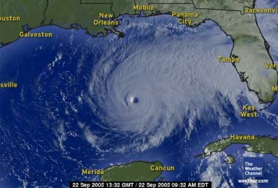

2005 Schedule/Results

Week: 1 2 3 4 5 6 7 8 9 10 11 12 13 14 15 16 17
| Weekly/Yearly Honors | |
|---|---|
| * | |
| * | Most points in a game (year) |
| * | Fewest points in a game (year) |
| * | Most lopsided victory (year) |
| Week 1 NFL Schedule |
|||
|---|---|---|---|
| Beer 'n Broads | 21 | Purple Helmeted Soldiers of Love | 31 |
| Ball Busters* | 48 | Fountain of You | 9 |
| Enlightened Rogues | 29 | Thundering Curd | 28 |
| Horny Toads | 12 | Da'renegades | 35 |
| Itchy Tortugas | 40 | Got Sheep? | 25 |
|
September 11 It's been four years. In tribute, the Tribute in Light from March 23, 2002: The Purple Helmeted Soldiers of Love sport bigger heads than Beer 'n Broads with a 31-21 victory. The lavender lovesticks send Mr. Brady home to Carol early after he dictates 306 passing yards and two touchdowns at the office Thursday night, then coast from there with single touchdowns out of their top back and receiver, a.k.a. LaDainian and Marvin. Strohs and strippers get a less than Edenistic performance from Adam to trail 15-6 after Thursday's action, then lose ground from there as ex-Westlakian Drew hurls two touchdown passes but everyone else snoozes. The Purple Helmets experience déjà vu in their swollen heads as they open their second straight season downing Beers while B'nB rack up their sixth straight L as their top choice Domanick gets dominated and they net only three points from their top four picks. The Ball Busters use a leftover Viking Whizzinator to plug the Fountain of You 48-9. The testicle tenderizers register the season's first points 3:09 into Thursday's game en route to a 30-0 opening night lead from two of the Backstreet Boys - Kerry and Corey - and never look back thanks to nine points each from Bengals Rudi and Shayne. The sewer spewer's owner casts a dark shadow over the franchise's entire season when he starts a suspended tight end - perhaps that's just the owner's sexual preference - so one Tiki teedee is all the team can muster. The Commissioners create a very colorful scoreline as all four weekly/yearly honors end up attached to this game, with the two most dastardly - year's fewest points and most lopsided victory - staring the Fountain in the eye for some time to come - just desserts for sending in a defenseless lineup. The Enlightened Rogues punch holes in the Thundering Curd's adult diapers and slide by 29-28. The knowledgeable gnomes see their top two picks stymied against far weaker teams, but old man Jimmy Jags off the Hawks to the beat of 130 yards receiving and two touchdowns to bail out the team. The mighty mumbling milk's O is underground as top two backs Curtis and Ahman gain nothing over the ground, so Peyton's substandard two TD passes and one DJax touchdown reception are about all the dipstick has to measure. The Rogues enjoy a winning record for the first time since Strom Thurmond was squeezing whiteys in the mirror - and blackies in the barn - but could reap better results from Anquan if the owner stops calling him Bolbin while the Curd appear to be playing like a snake with the head cut off after the owner's favorite pet, Ryan Longwell, is off kicking for another team for the first time in five years. Da'renegades use flypaper as bait to silence the Horny Toads 35-12. The rushless rebels break out a fleet of Dodge trucks and they prove to be Ram tough as Bulger throws for 362 yards and two touchdowns - one of them to Sir Isaac - which complements the Mouth out West's 130 receiving yards and one touchdown Thursday night. The unfornicating froggies suffer less Balt than more as Lewis and Mason fire blanks, and when octogenarian Brett joins in the aimless shooting the team's fate is laid out in concrete. The Renegades are looking pretty good as they win handily despite their two starting running backs accounting for half of the zeros registered by the 16-man roster while the Toads go touchdownless and may be in for a long, painful season after betting the ranch on the arm of a quarterback old enough to get a date with Anna Nicole Smith. The Itchy Tortugas slice and dice Got Sheep? 40-25. The talcless tacos get a kick out of a Ram as Wilkins leads the team with 13 points and McAllister - seemingly AWOL for several tours of duty now - scores Deuce touchdowns on a measly 64 yards. The open-ended ovine are off to a majorly raunchy start as the Indy defense equals their top two picks, Priest and Donovan, with six whole points and neither receiver could catch herpes at a 50-year Mustang Ranch reunion. The Torts win but look to be one Peyton less - and one chimp more - than last year's version of Manning and the Five Monkeys while the Sheep are already hurtin' for certain as Donovan gets McLaid out Monday night and top receiver Javon needs a Walker to get around for the rest of the year. |
|||
{kind=link}
| Week 2 NFL Schedule |
|||
|---|---|---|---|
| Beer 'n Broads | 27 | Fountain of You | 21 |
| Purple Helmeted Soldiers of Love | 41 | Enlightened Rogues | 26 |
| Ball Busters | 37 | Itchy Tortugas | 32 |
| Horny Toads | 41 | Got Sheep?* | 45 |
| Da'renegades | 38 | Thundering Curd | 12 |
|
Beer 'n Broads use the output from too much Taco Bell input to clog the Fountain of You 27-21. Guinness 'n ass get kicks out of Phoenix as Neil Rackers up four field goals to stake the team to a 18-5 lead after Sunday's action, then hold on for dear life while Horn catches 143/1 Monday night. The squatting spouters are squalid again as a 100-yard rusher and defensive safety are all they have to show for the weekend, so a rushing and receiving touchdown from the Barber of New York are not enough to erase the deficit. The Beers win but need to address some serious concerns - like why their bye week almost turned out to be a loss and why their three Vikings players are averaging zero points for the year - while the Fountains are rivaling Old Faithful in predictability, spewing forth putrid performances every weekend like clockwork.
The Purple Helmeted Soldiers of Love flip the switch and turn out
the Enlightened Rogues 41-26. The mauve male missiles get five
touchdowns out of four starters, with the lone double dose coming
from the league's top pick who sets an NFL record by rushing for
touchdowns in 14 straight games: The Ball Busters boil oil and deep-fry the Itchy Tortugas 37-32. The sack stompers enjoy a surprising day out of Hines as he Wards off the Texan D for two touchdowns, but even more surprising is the winning margin which comes from an interception Bearly run back for a touch. The bobbing burritos suffer penis envy as they play with their Johnson and Willie to produce a pair of 100+/1 outings and give the team a real good shot Monday night, but Deuce is a puss playing at home... against the Giants... at Giants Stadium. The Busters move to 2-0 but look to be a bigger mirage than the one on the Vegas strip as they get only six points from their top four picks while the Itchies continue to prove year after year that no matter how bad you draft you can still be somewhat competitive by ogling the I-R report and picking up the injureds' replacements, such as spending $2 to whip out their fast Willie in public. Got Sheep? use the plastic phallics to satisfy the Horny Toads 45-41. The cockless stock emit a stench that would put a pig sty to shame as both receivers catch nada and even the kicker somehow gets blanked, but Donovan is McNabulous in slicing and dicing the Golden Gate High defense for 342 passing yards and five touchdowns. The amorous amphibians aren't grounded in reality as Willis and Jamal rush for a pathetic 34 and nine yards, but the Packer geezer throws for 342 yards too - but only 60% of the TDs - and Ownes (not a typo, just how the owner refers to him) snags two touchdown passes - but only 40% of the opponent's QB's targets - to come up a bit short even though that seems to add up to 100%. The Gots look like they can make a run at the ATM Bowl after all - as long as they get 30+ points from their one decent player at least nine more times this year - while the Hornies can now brag about having one of only three quarterbacks in NFL history with 50,000 passing yards, which might make them sleep easier at night despite that 0-2 record hanging 'round their neck.
Da'renegades issue a gag order and silence the Thundering Curd
38-12. The delirious derelicts lay down three of a kind - nines
- as King Alexander, Randy Mouth and the Cadillac all register
100+/1 days, any one of which would have won this game when
combined with the kicker's total. The reverberating Ricotta are
clueless - and touchdownless - as marquee names like Peyton,
Ahman, Curtis and Tony all net nada, so Jeff Reed is the "stud"
of the day by kicking for 75% of the team's offense. The Gades
stay undefeated - and should remain so as long as their opponents
keep cranking out 12-point totals like the first two - while the
Thunderings have the inside track to the first ever
Batten down and take care this weekend...  |
|||
{kind=link}
| Week 3 NFL Schedule |
|||
|---|---|---|---|
| Beer 'n Broads | 27 | Horny Toads | 48 |
| Purple Helmeted Soldiers of Love | 50 | Ball Busters | 48 |
| Fountain of You | 43 | Enlightened Rogues | 45 |
| Da'renegades | 54 | Itchy Tortugas* | 62 |
| Got Sheep? | 37 | Thundering Curd | 11 |
|
The Horny Toads down hops, malt and yeast and secrete Beer 'n Broads 48-27. The passionate pollywogs are hoppin' mad for starting a Viking running back that falls forward twice for four yards, but Delhomme (French for the man) throws three touchdowns to Stevonne (French for female impersonator) and watcha talkin' 'bout Willis runs for 140/1. Buds 'n boobs start the main Minnesota man but he only garners performance points, so a pair of dozens out of a dress blowing in the Brees and a nice Rackers is all the team has to offer. The Toads finally break into the win column but are running out of games with semi-pro opponents while the Broads are stumblin' bumblin' drunks with their top two backs on byes and the aforementioned female impersonator not in the lineup because he's chained to the owner's bed. The Purple Helmeted Soldiers of Love escape a close shave from the Ball Busters 50-48. The violet Viagrarians are as limp early on as Bill staring at Hillary in the shower to trail 48-10, but LT2 puts on a Sunday night performance worthy of the Pope with 192/3 over the ground plus a passing touchdown and Jason slashes 12 scalps off the Chiefs Monday night to mount the comeback. The staff swatters get three pairs of touchdowns out of Dillon, Collins and Ward, but the other back and receiver don't amount to much of anything and that is that. The Helmeted Love are the last of the undefeated but surely won't stay that way much longer when 80% of the starters' touchdowns come from one player while the Balls come up three receiving yards shy of the win but still lose their first of the season despite having the top offense and defense in the East. The Enlightened Rogues use the entire wine bottle to cork the Fountain of You 45-43. The clever con men finally get output worthy of a first-round pick when Culpooper throws for exactly 300 yards and three touchdowns to earn the upgrade from Culcrapper, and Orange Julius Jones chips in with two rushing touchdowns. The gayer geysers finally show some sign of life as Antonio busts down the Gates to score his first TD on the year and Blew Dredsoe throws for 363/2 plus a two-point conversion plus - bend over and grab your ankles for this one - a rushing touchdown. The Rogues move to 2-0 against the worst two teams in the league but realize football is a game of inches - they won this one by just 36 of them - while the F-Yous look to be totally F'ed and heading in the opposite direction from last year - exactly as predicted by the status monkey in last year's Coach of the Year award presentation. The Itchy Tortugas use two-sided flypaper to capture Da'renegades 62-54. The tense tamales empty their six-shooter as everyone but the defense scores, with Holt and Johnson catching 240/3 between them and Westbrook and Plummer going multidimensional with a rushing and receiving touchdown and a rushing and passing touchdown, respectively. The outlandish outlaws are all about wasting the Bulging Shaun as Alexander rushes for 140 yards and four touchdowns through a defense with more holes than Bush's policies and Marc throws for three. The Tortugas win but need to be wary as their defense is only outsucked by the Fountain of You and it looks like most of this week's starters registered their career days while the Renés lose their first of the year and have to point their finger at a suspect defense that gave up 50 more points than average. Got Sheep? strap steel stilettos to their hooves and trample the Thundering Curd 37-11. The marauding mutton get nothing from either receiver and even the Priest's prayers go answered, but broken Downovan throws for 365 yards and two touches and Edinger comes in one point behind with four FGs and three PATs. The stagnate Swiss should relocate the franchise to Baltimore because they are all about the O's - zere-O's - as nobody finds the friggen' end zone for the second straight week and the team's aimless fidgeting indicates they're infected with crabs. The Sheep snatch their second straight win, which is about as deceiving as Hillary's move to New York because "she loves the people there" while the TC have the perfect team name - there is no O in Thundering Curd - as they are on a pace to shatter the record for fewest points in a year and are being outscored more than 2-to-1 (pssst, Al, Eli is outscoring Peyton almost 3-to-1). |
|||
| Week 4 NFL Schedule |
|||
|---|---|---|---|
| Beer 'n Broads | 28 | Got Sheep? | 44 |
| Purple Helmeted Soldiers of Love* | 59 | Thundering Curd | 19 |
| Ball Busters | 22 | Horny Toads** | 62 |
| Fountain of You | 25 | Da'renegades | 38 |
| Enlightened Rogues | 32 | Itchy Tortugas | 29 |
|
Got Sheep? lift their legs and whiz in 'n on Beer 'n Broads 44-28. The ramblin' rams finally start the right Tampa Bay receiver (why one would expect hands of Clayton to catch anything is beyond most folk's grasp) and little Joey hauls in 166/1, but the real stud continues to be the Don of Philadelphia who adds 369 passing yards and three touchdowns to his bountiful results so far this year. Fat Tire 'n fat asses only find the end zone once all weekend when Leftwich throws right to Jimmy, so the only reason this game isn't a total rout is that Neil kicks the schtick out of the pigskin in the desert again, this time to the tune of six FGs and a PAT. The Got? win their third straight corresponding to McNabb's three straight 300+ yard passing games with ten total touchdowns - perhaps this is the 2005 version of last year's Torts, a.k.a. McNabb and the Five Monkeys - while B'nB are in big trouble at 1-3 with their kicker Racking up 14 more points on the season than any other player on the team, and only one touchdown out of all four backs to boot. The Purple Helmeted Soldiers of Love use their magic wands to stir up the Thundering Curd 59-19. The plum peckers go out and prove their appendages are bigger as they score by hands (109/2 and 92/1 from Harrison and Driver), legs (134/2 and 126/1 from Tomlinson and Jordan), arm (224/1 from Brady) and foot (eight points from Elam) - you'll note which appendage is missing from this list because it didn't score this week. The motionless Mozzarella have no appendages to speak of as the Peyton replacement throws for 126/0, the backs run down 36/0 and 30/0 and the receivers throw down 5/0 and 55/1 (finally, a touchdown... thanks Darrell!) - good thing the defense scores a touchdown as well. The Purple Soldiers remain untouchable - much like their aforementioned appendage - with the most potent offense in the league while the Curd remain unvictorious with the most impotent offense and defense in the league and are served their just desserts for benching the league's #3 pick (24 points) in favor of a Niner whiner (0 points) (pssst, Al, Manning is the man, Rattay is ratty). The Horny Toads leap off the lily pad and land square on the Ball Busters 62-22. The charged croakers return home satisfied after scoring all over the swamp, getting 204/2 and 171/1 from receivers Plax and T.O., 84/1 and 81/1 from backs Willis and Jamal, 206/2 from queue-bee Jake and 11 points from kicker Nate. The nad knockers get the typical 60 some-odd yards plus a touchdown out of Dillon and Wayne even snags his first touchdown catch on the year, but Kerry, Rudi and the Key all leave the scoreboard dark, similar to the owner's playoffs aspirations. The Toadies lick the Balls and are horny no more - which has many in the league worried but has the support of San Francisco's population - while the BBs, once three points away from 3-0, look shellshocked this week after the kicker from the owner's beloved Broncos booted them to the curb late last Monday night. Da'renegades lay down some big logs and stop up the Fountain of You 38-25. The destructive deserters blow a gasket after the Cadillac sprains a strut early in the race, but the rest of the drivers cross the finish line with Bulger leading on 442 passing yards and two touchdowns and Fitzgerald coming in second with 102 receiving yards and one touchdown. The spunk sprayers get touchdowns from Tiki, Drew and the Edge and performance points from Tiki and Antonio to keep it close, but one single stinking point from the kicker Monday night ruins the whole weekend. The Renegades lay atop the West tied with the Sheep (better than being tied to the Sheep) thanks to the division's best O 'n D while the You Fountains continue their plunge down the toiletal abyss thanks to a pathetic offense on pace to score less than half of the franchise's record setting total from last year. The Enlightened Rogues use 60 grit sandpaper to scratch the Itchy Tortugas 32-29. The refined rapscallions catch a good buzz as Boldin and Smith each receive one touchdown and over 100 yards and Daunte turns in another substandard single six, but for the second week in a row the kicker - Kasay in this case - delivers the winning points during Monday Night Football. The fidgety fajitas suffer a power outage as Plummer flushes down two touchdowns on only 136 passing yards and the backs get a paltry three (McAllister's 130 yards) and two (Westbrook's two-point conversion) points, with two sixes out of two Rams wrapping up the effort. ER moves to an impressive three up and one down - impressive for this club, anyway - but could be in trouble as it looks like the owner has given up on sending in lineups a full seven weeks ahead of schedule while the Itches are the best in the West divisional record-wise (2-0) but are a feast for the East (0-2), making them simply average overall. |
|||
| Week 5 NFL Schedule |
|||
|---|---|---|---|
| Beer 'n Broads | 41 | Purple Helmeted Soldiers of Love | 31 |
| Ball Busters | 26 | Enlightened Rogues | 37 |
| Fountain of You | 21 | Got Sheep? | 14 |
| Horny Toads | 34 | Da'renegades* | 49 |
| Itchy Tortugas | 28 | Thundering Curd | 34 |
|
Beer 'n Broads sneak behind the bar and pour the Purple Helmeted Soldiers of Love a severe 41-31 case of whiskey dick. Schlitz 'n tits are Allstate-ish for being in good hands with Stevonne's 119 receiving yards and two touchdowns and bruised Drew's 99 and one, and further insurance is added when both backs break the 100-yard barrier - without scoring - and Drew neutralizes LaDainian's six Monday night points to maintain the margin of victory. The flaccid womb ferrets reminisce in TV Land as Brady bunches 22 points on 350 passing yards and three touchdowns, but the rest of the team plays in more black than white as both receivers and Warrick are Dunn before beginning and LT2 can't do enough on MNF to overcome the 35-25 deficit. The Beers have their lineup prayers answered as they finally beat a team other than one of the lowly Fountain/Curd duo but better not bank on divine intervention for ten more weeks while PSHoL strap on waiter aprons and pour the champagne toast for the '72 Dolphins in attendance at the game as the league's last perfect season bites the dust. The Enlightened Rogues slip on the skates and slide past the Ball Busters 37-26. The swift swindlers are stupefied to find offense in the most unlikely places as bottom of the barrel Brunell passes for 322 yards and two touchdowns and Boldin benefits from a reborn Cardinal offense with 158 yards receiving and one touchdown. The acorn antagonists are one-dimensional as Air McNair is hot, throwing for two touchdowns and rushing for one, but the rest of the team is full of hot air as only the kicker adds points despite the other four players all coming within 25 yards of 100. The Enlighteneds are 4-1 - as believable as Wynonna becoming a waif - but manufactured those wins by an average margin of only four points (two prior to today's game) against teams that are 6-14 while the Busters continue their downslide and now are proud parents of the league's longest losing streak thanks to going from the East's best defense to worst in just two weeks. After four weeks of mounting pressure, the Fountain of You finally let loose all over Got Sheep? 21-14. The 'jaculating jets are as anemic as ever as the Brooks runs dry and Andre J takes off the day after the first play, but Edge puts up 105 yards rushing and one touchdown and Fragile Freddy's performance points matches the kicker's lone field goal. The flocked flock wander the plains without a shepherd as McNabb takes his bye a week early and the rest of the offense follows suit, so the only touchdown is registered by the Indy D on an interception return. The Fountains savor the sweet taste of victory for the first time since ATM Bowl XV - amazing how a stench that nasty can linger for 40 weeks without lifting - while getting tickets to see the Sheep play like this is about as welcome as tickets on the new Love Boat - a.k.a. Al and Alma's Lake Minnetonka cruise - and finding your seat is next to a horny Viking. Da'renegades fill the pond with ice and turn off the Horny Toads 49-34. The tumultuous turncoats learn a lesson about worth when Dante' stalls after six yards, but the rest of the team is on overdrive as top pick Shaun and hurler Marc each tally two touchdowns plus performance points and Stephen and Larry each chip in one six-pointer. The willing wartbacks are all about the Brett as the Green Bay gummer lights up the pathetic Nawlins defense for three touchdown passes, but 10 kicking points and a Jamal touchdown dive are all the rest of the teams has to offer. The Gades deserve a medal for establishing the best offense in the league along with the best record but will need to prove their mettle next week when they take on another 4-1 team with the second-best offense while the Hornies need to get over their natural camouflaging tendencies as they are blending in with the six other teams at the bottom of the losing record quagmire. The Thundering Curd use overstuffed cheese sticks to whoop up on the Itchy Tortugas 34-28. The trumpeting Tourmalet dismiss the NFL's I-R report as overhyped and start a slightly broken Ahman and a severely broken Darrell, but my favorite Martin Curtis rushes for 59 yards (badness) and two touchdowns (goodness) and Peyton, Todd and the defense all add single touchdowns. The grating gorditas get the usual stud performances from their stud receivers as Holt and Johnson total 15 points, but the rest of the team is unstudly as both backs receive more yards (33 and 24) than rush (31 and 12) and Plummer can only muster one touchdown on a paltry 91 passing yards. The Curd's win is as unexpected - and refreshing - as the Yankmes and Dead Sucks getting booted from the MLB playoffs in the first round but future I-R attention is definitely warranted while the Torts are heading in the wrong direction and should be even more concerned with Gus "Puspot" Frerotte leading the team in scoring. |
|||
| Week 6 NFL Schedule |
|||
|---|---|---|---|
| Beer 'n Broads | 29 | Enlightened Rogues | 46 |
| Purple Helmeted Soldiers of Love* | 57 | Da'renegades | 50 |
| Ball Busters | 19 | Fountain of You | 43 |
| Horny Toads | 29 | Thundering Curd | 47 |
| Itchy Tortugas | 17 | Got Sheep? | 55 |
|
The Enlightened Rogues outdrink Beer 'n Broads 46-29. The versed voyagers exploit the biggest hookup to hit Washington since Monica was bent over Bill's desk as Brunell throws for 331 yards and three touchdowns - 173 and two of 'em into the hands of Santa Moss - and that more than makes up for the rest of the team's inadequacies. Tuborg 'n tuboobs savor the typical 100+ receiving yards and one touchdown from Studvonne Smith, but the rest of the team are duds as Drew and Domanick each score a touchdown on low yardage and Joe Horn leaves in the first quarter after Joe Horn reinjures Joe Horn's hammy. The Rogues remain tied with the best record in the league, which is as misleading as an Angelina Jolie mask on a Barbara Walters body as they are 5-0 against 2-4 teams and 0-1 against winners, while BnB share the worst record in the league with five other schmucks thanks to having an offense as offensive as the owner's beloved Vikings - both on and off the field. In Clash Of The Titans Bowl I the Purple Helmeted Soldiers of Love outtitan Da'renegades 57-50. The lilac lust swords get lots on little as Harrison and $2 acquisition Jurevicius score touchdowns on 39 and 29 yards and Jordan runs in two on 36 yards, but LT2 his a jack of all trades as he nails down the rare trifecta of a passing, rushing and receiving touchdown. The rad radicals are special - special teams, not special ed - as the defense runs back an interception and a receiver runs back a punt, but when K Jones and R Moss leave the game early the 141 yards rushing and four touchdowns from Alexander the great are lessened. The status monkey expects a little something special under the Christmas tree from the Helmeted Purple's owner for questioning why he'd pick Shaun over LaDainian - and his league-leading 88 points and tied NFL record of 18-straight games scoring a touchdown - while the Renegades need to rethink their scoring strategy and take on a more golfish approach as they are 0-2 when scoring 50+ - corresponding to when Shaun goes off for four touchdowns - while they are 4-0 when scoring under 50. The Fountain of You outroll the Ball Busters 43-19. The butt bubblers are their typical boring low-scoring selves during Sunday's action as Bledsoe and the defense each tally a single touchdown, but James blows the game wide open Monday night with 143 rushing yards and three touchdowns. The owner of the bauble breakers uses her female intuition to see through Bill Belichick's bull (a.k.a. I-R abuse) and sits Dillon, who ends up suited but unplayed, but the rest of the team seemingly ends up suited and unplayed as only Rudi and Reggie register touchdowns. The Yous seemed to have righted the ship momentarily as they counter the league's second worst offense with the second-best defense - defense, or other teams giving their stars a week off when they play the FoY - while the Balls have gone from penthouse to pavement in four short weeks, which is exactly where they belong for drafting many of the NFL's bottom-dwellers. The Thundering Curd outleap the Horny Toads 47-29. It took six weeks but the yammering yogurt finally display a well-rounded offense as the Bell tolls for Martin (both backs rush for 100+/1) on a Heap of Moulds (both receivers catch 50+/1), and the elder Manning puts up two Monday night touchdowns to put down the opponents. The bursting batrachians' offense is far from Ravenous as neither Lewis nor Mason break neither the plane of the goal line nor performance barrier, and when Burress is in duress with only 55/0, McGahee's fine day of running 143/1 over the turf is forgotten. The Thunders have put together a two-game winning streak to tie them with 60% of the league for worst record, but may not be streaking long (ever thought you'd hear "streaking" and "long" together when talking about the Curd's owner?) as this week's output is 45% of the previous five weeks' while the Toads must be wondering why they ever departed the swampy confines of Boca for the dry hills of Austin as they go 2-0 against the East but 0-4 against the West. Got Sheep? outscratch the Itchy Tortugas 55-17. The aroused aries do the most damage over ground as the rarely-unbroken Brown bags two touchdowns on 84 yards rushing and the almost-forgotten Priest nails a pair of his own - pair of touchdowns, you perverts - on only 18 yards rushing but 100 yards receiving. Injuries and a bye week force the edgy enchiladas to start a doubtful DeShaun and he Fosters the expected goose eggs, and when Gus, Torry and suddenly unfast Willie are also no-shows the rout is on. The Gots prove they can manage without McNabb, although they may have shot their entire wad all at once as only three kicking points were left on the bench while the Itches are licked more thoroughly than Martha Stewart during her time in Alderson Federal Prison Camp. |
|||
| Week 7 NFL Schedule |
|||
|---|---|---|---|
| Beer 'n Broads* | 47 | Thundering Curd | 26 |
| Purple Helmeted Soldiers of Love | 46 | Horny Toads | 32 |
| Ball Busters | 19 | Da'renegades | 20 |
| Fountain of You | 44 | Itchy Tortugas | 13 |
| Enlightened Rogues | 37 | Got Sheep? | 30 |
|
Beer 'n Broads overflow with froth to spoil the Thundering Curd 47-26. Stag 'n hags actually turn in a lineup featuring Stevonne who is Stevgone on a bye week, but the only Clinton in Washington to ever do any good comes to the rescue with 101 yards rushing and three touchdowns and Mewelde scores the first touchdown of 2005 from a Viking back. The chundering turd manage to manipulate Manning for two touchdowns, but the only other six-pointer comes from a meager 28/1 rushing performance out of Martin as the Bell no longer tolls for Tatum and the Mouldy Heap starts to stink. The Broads climb out of the cellar in the East but have a long way to go to reach the summit as two teams are still three games ahead of them while the Curd remain in a three-way tie for worst of the West thanks to having the league's only sub-200 offense and now have to face life sans Ahman, not that they'll miss his zero points YTD. The Purple Helmeted Soldiers of Love drop their drawers to pistol whip the Horny Toads 46-32. The one-eyed wonder worms see LT2 go AWOL with an unbelievably pathetic seven yards rushing - that's right folks, just eight more yards than Ricky Williams on the week - but LaMont salvages a win with 122 yards rushing and three touchdowns. The ardent anurans are inflated with air success as Far-vra launches 315/2 and Terrell and Plax each snag a touchdown, but when McGahee and Lewis barely get halfway to performance points the fat lady starts to sing. The Soldiers o' Love remain tied with the Rogues for best league record and look to be in good shape when every other back on the team can rush for at least 93 more yards than Tomlinson while the Horns are hard to figure out as they have the number-three ranked offense yet are three games under .500 and among the three worst teams in the West. Da'renegades outguess the Ball Busters 20-19 in the Can't Decide Who To Start Bowl. The insufferable insurgents turn in a second lineup spending $2 for the opportunity to pick up Soldier excrement that looks and smells like Alge and, much like the rest of the team, does nothing, so only Hass and Fitz register touchdowns and France wins the kicking battle 8-7 (first time France has prevailed in any battle). The marble mashers also turn in two lineups, although either would have produced the same results as rookie Ronnie's addition (+6 from Rudi) is negated by an absent veteran McNair's subtraction (-6 from Collins). The Gades gain sole possession of numero uno in the West but have to be concerned with only beating the worst team in the league by one point - and that without her quarterback suiting up - while the Busters have to know that they're doomed when even the I-R report goes against them as a probable quarterback doesn't play, a questionable receiver does (and scores) and the other quarterback's doubtful receiver does too (and scores), either one of which would have secured the W. The Fountain of You use man goo as salve to eliminate the Itchy Tortugas 44-13. The sperm spigots are devilishly consistent as Barber and Bledsoe and Evans and Gates register 6-6-6 - and 6 - and James out-evils them all with 139 rushing yards and two touchdowns. The chafing chimichangas resort to the favorite IBM excuse for everything - Notes - to explain why a lineup wasn't turned in and they play the same trash as last week with similar ass-whooping results as DeShaun and Torry don't suit up and the quarterback stinks like a Frerotting corpse - many thanks to fast Willie's 131/1 to get the team into double digits. The FoY-boys use a three-game winning streak to - much like Viagra at home - reinvigorate themselves so that they can continue to ride the, uh, wave while the IT's owner needs to break out the heavy-duty latex gloves to avoid getting sick from all the crap he's handling as his "team" gets outscored 99-30 over the last two weeks. The Enlightened Rogues slam on the brakes but not in near enough time to avoid rear-ending Got Sheep? 37-30. The wizened wanderers decide to be the first team in league history to play brothers in the backfield, which is way cool except for the fact that one doesn't play and the other wanders around for 139 yards without scoring, but the Brunnell-Moss combination combines for four touchdowns and three performance points. The rectal ram-mers play a Javon who is using a Walker to get around and a Brown who is Chris-ened with a stinger in the first half, so the Priest's 12-point Friday night sermon and touchdowns out of McNabb and the defense are all that's worth mentioning. The Lite N's finally beat a team with a winning record and have to be gaining confidence because a) they can still win despite benching Jackson and Johnson and their three TDs for the Jones bros and their three points and b) they've sucked for decades (14-31 and three straight last place finishes in last three seasons) while the Got's owner has secured his place in the Cheapskate Hall of Fame as he has three receivers on a bye and decides to start the two he has left - one a #3 receiver (24 yards) and the other a receiver who has been on I-R since Week 1 (guess how many yards) - $2 or $4 could have saved the day. |
|||
| Week 8 NFL Schedule |
|||
|---|---|---|---|
| Beer 'n Broads | 45 | Fountain of You* | 54 |
| Purple Helmeted Soldiers of Love | 37 | Ball Busters | 30 |
| Enlightened Rogues | 18 | Thundering Curd | 44 |
| Horny Toads | 32 | Got Sheep? | 40 |
| Da'renegades | 21 | Itchy Tortugas | 51 |
|
The Fountain of You spew spooge into the brewage and despoil Beer 'n Broads 54-45. The anal power shower lie on their backs when confronted by the enemy - oops, the monkey meant rely on their backs - as Tiki Bar goes off for 206 rushing yards and one touchdown and Fragile Freddie tags on 165 and one, and the deal is sealed when Antonio catches three Breesy touchdown passes. Coors 'n whores' backs are broken as Domanick misses the end zone and Clinton follows up his three-touchdown performance with four carries for nine yards, but Stevonne goes Stevoff for 201/1 and Brees throws three teedeez to keep it close. The Fountains bump their winning streak to four games thanks to their nailing down the same tight end year after year while the Beers can't seem to stomach success has they have yet to put together more than one win in a row this year. The Purple Helmeted Soldiers of Love don their male chastity belts and stop the Ball Busters dead in their tracks 37-30. The staff sergeants bring out their six-shooter - okay, 4¾ tops - as five of seven possible scorers, including the defense, register six points on single touchdowns with only Elam's seven and Driver's zero breaking the pattern. The acorn assassins are as one-dimensional as ever as only one offensive player bothers scoring touchdowns - Kerry's three against Tennessee - but the defense runs an interception back for six which allows the team to break 20 for the first time in several weeks. The Purple Helmets are now sole proprietors of the nicest record in the league, which is about as surprising as Sulu "popping up" in Kirk's shower, while the Balls continue to get dicked by Belichick's schtick as their benched top pick is listed as questionable and doesn't practice all week, yet still manages to score two touchdowns. The Thundering Curd fan the Limburger over the field and gas out the Enlightened Rogues 44-18. The cheese wizards capitalize on a mile-high 107/2 rushing performance from Tatum and a beantown 125/1 receiving performance from Eric, but the end result is truly destined when Tony Fishers out a rushing touchdown and the Carr accidentally crashes into the end zone for a change. The hip hooligans implode after the recently potent Brunell-Moss combination, good for nine touchdowns over the last two weeks, go impotent with 99 yards combined, so the only semi-erectile performance is registered by Jackson's 200 combined yards with a touch. The Thunderings seem to do best when the owner is out of town, perhaps due to their ease of mind that comes with not having to deal with his incessant bumblings, while the Enlighteneds get firsthand experience with "when it rains it pours" as they see their five game winning streak end, their Skins combo go for no-no, their top pick Daunte go down for the year and top receiver Anquan for 2-4 weeks, and their #2 back relegated to backup after an awesome Marionette show.
Got Sheep? pull full leg splits and give the Horny Toads a 40-32
wet dream. The flock-ewes play Galloway who shows the way with
149 receiving yards and a touchdown and Branch and Brown each
contribute six, but the real stud is Carson who acts more like
Rosy Palmer as he whacks the fudge Packers for three touchdowns.
The salivating salientians put on the mileage but don't reach
their destination as the backs earn 299 yards with only one
touchdown, the quarterback earns 290 yards with only one
touchdown, and the receivers earn 247 yards with only one
touchdown. The Sheep get back to first thanks to a tight defense
that makes it difficult to penetrate any end
The Itchy Tortugas head for the border in order to negate Da'renegades 51-21. The flaming flautas display a nice pair as Jake snakes the Eagles for 309 passing yards and four touchdowns and Jay is Feelying the kicking groove with five FGs and 3 PATs whereas the rest of the team puts out as much action as a deflated blow-up doll. The runaway recreants just plain stink up the joint as the receivers go for 36 and 26 yards, the backs go for 40 - with an accidental two touchdowns - and 20 yards, and the only other touchdown comes from a Texas-ex Simmsulating a professional quarterback. The Torts manage to snap a four game losing streak by disguising the team ugliness under a two-headed mask as 88% of the offense comes from two career days from perennial busts while the Renegades look dazed and confused without their top draft pick around as they score 20 last week and win and 21 this week and get whooped. |
|||
| Week 9 NFL Schedule |
|||
|---|---|---|---|
| Beer 'n Broads | 40 | Ball Busters | 24 |
| Purple Helmeted Soldiers of Love*** | 65 | Enlightened Rogues | 25 |
| Fountain of You | 29 | Got Sheep? | 39 |
| Horny Toads | 13 | Itchy Tortugas* | 6 |
| Da'renegades | 40 | Thundering Curd | 37 |
|
Beer 'n Broads use strip club spillage to shellac the Ball Busters 40-24. Strohs 'n hos manage to eke out single touchdowns from Brees, Portis and the Pittsburgh defense, so as expected the bulk of the offense is provided by Rackers (four more field goals) and Smith (106 yards receiving with one touchdown). The coconut crackers continue their mind-numbing trend of starting only one or two players that are up to being offensive - this time out it's Kerry with two touchdowns and Reggie with one to accompany 124 receiving yards. The Broads notch their fourth one-game winning streak of the season, which bodes well for next week's opponent since they haven't been able to keep it up for two straight weeks, while the BBs extend the year's longest losing line to seven and are now just a few points away from having the worst offense and defense. The Purple Helmeted Soldiers of Love fire love rockets into the nighttime sky and bedazzle the Enlightened Rogues 65-25. The organ officers ooze offensive output out of every orifice, with the lead flows provided by two sons of a... well, Tomlinson and his almost-typical four touchdowns and 153 yards of total offense, and Harrison and his 128 yards receiving and two touchdowns. The wandering minstrels suffer another double whammy shot to the gut as brutal Brunell and lost Moss come up empty again, but the Priest's substitute Johnson plows through boy's school with 107/2 on the ground to keep the score somewhat respectable. The Love Soldiers open up a two game lead over any other comer in the league thanks to their second four-game winning streak of the season but now face a week without their offense, er LT2, while the Rogues lose their second straight after starting 6-1, but their winning percentage still seems to be overly inflated - much like the owner's favorite under-the-bed toy - as the team is +3 in wins but -40 in points. Got Sheep? back the herd up and dump in the Fountain of You 39-29. The rear-rammed rams play without the team Priest when he bangs his noggin on the confessional door after hearing a juicy nugget from one of Michael Jackson's boys, but the rest of the team pulls through as Branch, Brown, Edinger, Galloway and Palmer all sink at least six. The jizm jets languish from leaky valves as only Trent, Jerry and the Edge nail paydirt once each, and the same Edge and Antonio garner performance points. The Gots remain firmly mounted on top of the West's best but may need spiritual intervention to remain there now that their Priest has been sentenced to spending the rest of the year without carrying little balls around while the Yous have their four-game winning streak snapped as they waste their opportunity to become an above-average team, which is fitting for below-average talent. The Horny Toads outsnore the Itchy Tortugas 13-6 in the first - and league-mandated last - Who Gives A **** About Their Team Bowl. The fervid frogs neglect to turn in a lineup and play Bronco and Bill backs on a bye, then find out Saturday that T.O. is K-O'd for the year due to mental deficiencies, but the defense manages to score a touchdown and Kaeding kicks seven and that is all that is needed in this "game." The surrendering salsa neglect to turn in a lineup and play a Plummer stuck under the sink, and when both backs go for bust (24 and 13 yards) and one receiver joins in (25 yards) the team lays what is commonly known as an almost flawless golden goose egg. The Hornies snap their four-game skid and win their first divisional game all in the same week, although the stark reality of wasting a second-round pick on a first-rate headcase comes to fruition, while the Itchies' transaction wizard should just head to Banana Joe's in Tampa and pick up a couple ex-Carolina cheerleaders - at least he could watch them score (now that gives new meaning to fantasy football). Da'renegades drip melted ice cream on the locker room floor and elude the Thundering Curd 40-37. The defecating defectors bank their battle on Seattle as Alexander rushes for 173 yards and two touchdowns and Hasselbeck passes and throws for one, but the winning margin is provided by Randy's undandy one touchdown on seven receiving yards. The sonorous soy milk start another broken Green Bay back which amounts to nothing, much like the rest of the team, so Manning's three passing touchdowns on 321 yards and Vanderjagt's ten points - all on Monday night - aren't enough to overcome the 40-6 deficit. The Gades recover in time to regain footing on first place but should be thanking their lucky stars since they owe their last two victories to the opposing owner playing a non-playing player while the Curd could sure use some owner assistance to help them play a Pack back that might see the playing field as the team is left trying to reel in a win without a Fisher. |
|||
| Week 10 NFL Schedule |
|||
|---|---|---|---|
| Beer 'n Broads | 24 | Enlightened Rogues | 35 |
| Purple Helmeted Soldiers of Love | 34 | Fountain of You | 41 |
| Ball Busters | 20 | Itchy Tortugas | 27 |
| Horny Toads | 21 | Thundering Curd | 25 |
| Da'renegades* | 63 | Got Sheep? | 24 |
|
The Enlightened Rogues power up the centrifuge and serve fizzy Beer 'n dizzy Broads 35-24. The scampering scamps finally see Brunell leave a Mark somewhere with two touchdowns and a two-pointer after two weeks of too little, and when J Kasay boots an even dozen the 293 combined yards from the backs with only three points are long forgotten. Hot toddies 'n bodies relish 144/1 rushing and a caught two-pointer by Portis, but Neil's subpar seven and Leftwich's lone lob are the only other points thanks to the receivers averaging 24 yards and zero touchdowns apiece. The Enlighteneds snap a two-game losing streak but still share the same underlying trait as all the other losers in the league - PA > PF - while BnB still can't manifest a multi-game winning streak, perhaps reflective of the owner's overall stamina in both the bedroom and on the gridiron. The Fountain of You outshoot the Purple Helmeted Soldiers of Love 41-34 in the annual Red Blister Shootout. The wad wellsprings nearly pass out when both receivers combine for 39 yards and Bledsoe only Drews up six Monday night, but a good case of the runs saves the day as Tiki goes for 95/1 - to accompany a two-pointer and 111 receiving yards - and Edgerrin tacks on 122/1, with the scoring topped off by Longwell's team-leading 15. The blue vein brigade get one TD from the backs and one TD from the receivers and one TD from the defense in the waning moments of Monday night, but the biggest disappointment is the one TD from the quarterback who is Manning-handled in a Giants way by the lowly Vikings. The FoY bounce back to even-steven overall and within their division thanks to taking advantage of a well-hung team without its primary weapon while the Soldier Helmets see their second four-game winning streak of the season spin down the drain as they are up a tree without an LT to begin with. The Itchy Tortugas use feather dusters to fluster the Ball Busters 27-20. The turbulent tacos' owner awakes from his lineupless slumber in time to start seven after wasting another $2 on another lost cause - L.J. the L.C. - and half the players come through with six and Jay PK's seven. The cahones crackers Raider the Oakland refrigerator as Collins throws for 310 yards and two touchdowns and Janikowski kicks five, but everyone else takes five except Dillon, who takes only one - only one play before he hits the showers. The ITs still suck - but not near as bad as their opponents - and the owner hasn't trailed in transaction spending this late in the season since our forefathers were falling out of the fruit trees of East Africa while the Busters set a new standard for futility as they have two benched players score more than all starters combined and all starting backs and receivers score zero while every benched back and receiver scores at least six (69 total). The Thundering Curd coat the lake with Cheese Whiz and suffocate the Horny Toads 25-21. The mumbling Muenster smell like they've been sleeping in a barn as they run with the Colts, who account for 100% of the offense - up slightly from last week's 84% - as the elder Manning sibling throws three and Mike kicks seven. The hot-to-trot hoppers can't catch a break - or pass - as Plax is waxed and Muhsin is worth only three yards, so Mike and Brett score the only offensive touchdowns and a Carolina interception return makes the score somewhat respectable. The Thunder win despite a deplorable O but look to have as much chance of making the playoffs as Rasta Williams has of passing up a trade to Denver to enjoy the new and improved mile-high city while the loss gives the Toads sole ownership of the worst record out West and keeps them in the chase with the Ball Busters for the eleventh pick in '06, a far cry from '99 when they met in the ATM Bowl. Da'renegades behave like butchers and slice and dice Got Sheep? 63-24. The delirious dissidents are firing on all cylinders as everyone and everything that can score a touchdown does - with Shaun tripling the pleasure - as both backs run for 246 yards and both receivers catch 228 and the quarterback throws 243. The legless lambs claim to be decimated at running back and amply prove it when Donovan's 22 yards rushing are a mere nine short of the team's best performance, so Joey's 131/1 receiving and Arizona's first rushing TD of the year - courtesy J.J. - are all the team has to offer. The Renegades knock their only competition in the West down a few rungs on the ladder of AFFL success with a thorough Sheep beating that forces the Got? to cake on the Preparation H in a vain attempt to ease the swelling as they attempt to regain their bearings with their top three picks plucked from the playing field. Editor's Note: Neat little pattern over the last five weeks as the home teams go 4-1 in Week 6, then the visitors 4-1 in Week 7, then home 4-1, then visitors 4-1 and finally home 4-1 this week. |
|||
| Week 11 NFL Schedule |
|||
|---|---|---|---|
| Beer 'n Broads | 46 | Itchy Tortugas* | 57 |
| Purple Helmeted Soldiers of Love | 45 | Got Sheep? | 47 |
| Ball Busters | 28 | Thundering Curd | 31 |
| Fountain of You | 32 | Horny Toads | 51 |
| Enlightened Rogues | 20 | Da'renegades | 43 |
|
The Itchy Tortugas thaw Beer 'n Broads 57-46. The bristling burritos think back to younger faces in different places as Warner puts on a Ram-worthy show with three touchdowns and a two-point conversion and newly acquired Droughns rushes for 166/1 just like the old Denver days, then good hands men Torry and Chad unite for 318/2. Ales 'n tails are driven by a westerly Brees as Drew burns Bills for 339 passing yards and four touchdowns, but Rackers' dirty dozen against Detroit is the only other good deed as Clinton is drained and TJ is Hushed-man-dzadeh. The Torts put on a surprisingly entertaining show considering how talent-poor they truly are as they find themselves two games out with four to play while the Beers fall even farther behind thanks to fielding the league's feeblest defense. Got Sheep? stuff Purple Helmeted Soldiers of Love 47-45. The shepherd stick warmers flush the Johnny after Carson dumps 335 passing yards and two TurDs down the toilet along with two Brown's - one rushing and one receiving - and Branch and Duckett each add a touchdown in their specialties. The pocket rockets get three passing touchdowns from Cadillac-deprived Tom and LaDainian scores a substandard six for the team to trail 39-33 after the weekend, and Donald Drivers home two MNF TDs which is nice but not nice enough when 100 yards or a third touchdown are needed. The mountin' Sheep climb to the summit of the wildcard mountain despite having their top three picks on NFL's I-R and the fourth on O-R - overrated rookie - while the Purple Love have gone from 8-1 and far ahead of everyone to 8-3 and as average as can be. The Thundering Curd baste the Ball Busters 31-28. The cheese dips' old owner is up to his old tricks as the only offense comes from the Colt couple as Peyton places 365 yards and three touchdowns in the hands of his receivers and the idiot kicker hits nine. The meat mallets are typically tainted as at least half the team doesn't tally, with those that do led by Shayne's 13 and Reggie's 117 receiving yards and one touchdown. The Curd secure their second straight success scoring in the twenties as their percentage of points from the Indy-Cincy game trumps their opponents 100-79 while the Busters are served their just desserts for starting an all-rookie backfield as Brown leaves behind a brown stain against the Browns and Gado becomes Godo as his hot start goes down in flames, much like the Packers' season (pssst, Steph, pay attention to the ABYSS rule - Avoid Benching Your Studs, Stupid - as Rudi would have easily won the game for you). The Horny Toads bake the Fountain of You 51-32. The lustful leapers hand the Mike to Anderson and he sings to the tune of 113 rushing yards and three touchdowns and Burress belts out 113 yards of his own - receiving - with one touchdown, then Favre pours salt in the wound with two Monday night touchdowns to blow open a reasonably close game. The plume pluggers push another two-touchdown day over the Edge and the Tampa defense runs back a fumble to match Antonio's touchdown total with one, but the game is lost when Bledsoe behaves like a dead hoe lying on the bed without a score. The Horns sit at the bottom of the well out West but could change things around quickly as they improve to 3-1 against the East and have three of their final four games against the same while the Fountains are losing volume quickly as they start to recede into the orifice from which the came. Da'renegades serve the Enlightened Rogues 43-20. The righteous rebels get 115/2 running from Shaun of the thoroughbred, 224/2 passing from Marc of the Bulging shoulder and 104/1 catching from Fitzgerald, so Davis' little six-incher, uh yarder, goes unnoticed. The all-knowing nomads suffer through yet another Washington power outage as Mark and Moss turn in blanks and the darkness is amplified by Steven's six yards rushing that match Stephen's, so the only bright spot is 211 yards rushing and two touchdowns from a big Johnson called Larry. The Gades' third straight win coupled with the Soldiers' second straight loss has them tied with each other for best record while the Rogues, once perched at 6-1, have lost three of their last four games corresponding to three zeros from the team's Redskin "heroes." |
|||
| Week 12 NFL Schedule |
|||
|---|---|---|---|
| Beer 'n Broads | 14 | Da'renegades | 40 |
| Purple Helmeted Soldiers of Love | 55 | Itchy Tortugas | 48 |
| Ball Busters | 43 | Got Sheep? | 47 |
| Fountain of You | 18 | Thundering Curd | 26 |
| Enlightened Rogues | 43 | Horny Toads | 29 |
|
Da'renegades flatten Beer 'n Broads 40-14. The dull dissenters continue to remain lossless in Seattle as Alexander racks up 110 rushing yards and one touchdown and Hasselbeck (the bald one, wait, uhhhh, the older bald one) hurls two touchdowns, and Akers boots a baker's dozen to cap things off. Busch 'n bush are quite Shakespearean as they are much ado about nothing when Brees Drews blanks along with Mewelde, Clinton and Stevonne (think these guy's parents dug way too deep into the Unique Baby Names book?) so TJ's 147 yards receiving with one touchdown garner a majority of the team's kudos. The Renegades reel off their fourth straight win as they remain hotter than Oprah's ass crack after 20 miles on a stationary bike while the Broads must be hearing bells because they just got schooled as they are bounced from playoff contention early on for a second straight year. The Purple Helmeted Soldiers of Love ream the Itchy Tortugas 55-48. The choad captains run amok through LaLa land as LaDainian puts up 184 yards and three touchdowns and LaMont 97 with two yet still trail 48-46 going into Monday night, but Marvin takes the opening play 80 yards to the house and the game is over. The flaking flan get 315 passing yards and two touchdowns from reborn Warner and a trio o' nines from Holt (130/1), Westbrook (117/1) and Wilkins but come up short as they are just outmanned in this one in both width and girth. The Love Helmets cease their two-game skid in time to remain bound and gagged, uh tied, for the league's best record and enjoy a virtual two game lead in the East thanks to sweeping the Rogues while the Itchies' loss makes it look like their best days are in the rear-view mirror, although in this case they are not closer than they appear. Got Sheep? trample the Ball Busters 47-43. The old dirt road ovine are all about Carson - heeeeeeeeeeere's Palmer! - as he passes for three touchdowns, 302 yards and a two-point conversion to account for half the O, and C Brown's 105/1 receiving and T.J.'s turkey day TD are about all that there is. The orb oppressors finally stink less than usual as every player but one scores, led by four rushing touchdowns from three different backs - Rudi (two), R Brown (one) and Kerry (one) - but Reggie's Monday night no-no dooms the five who tried. The Gots are looking good but hopefully don't choke away their shot at the postseason tournament much like some college team from Ames has done over last two years while the Balls might want to let the Air out of the tires - or at least the locker room - as McNair would have won the last two games if he had started in place of bomb Collins. The Thundering Curd cap the Fountain of You 26-18. The clamoring Cheddar reverse rodeo rolls as they are busted by two Broncos when Tatum and Ashley both buck zero yards to lead the team to a 15-0 deficit, but Vanderjagt and Manning go for 14 and 12, respectively, over the Steel Curtain Monday Night to pull out the W. The spooge spewers have a backfield that runs like FEMA - slow to start, lots of activity, few results - as Tiki and Edgerrin combine for 275 yards and no scores, and when coupled with a flat Porter and locked Gates the party is over. The Thundering win their third straight by nickel and diming their opponents as they average 27 points during the streak - all from Manning and the idiot Monkey - while the You see their playoff chances disappearing faster than Jennifer Wilbanks at a Georgia altar - but can you blame her, considering what Georgia men are like? The Enlightened Rogues jump the Horny Toads 43-29 in the second Who Gives A **** About Their Team Bowl in four weeks. The clever charlatans put their backs to the grind as Marshall's replacement runs for 110/1 and Priest's replacement runs for 119/1, and that combined with a Brunell-Moss hookup is enough for Week 12. The absent anurans don't have much to cheer about as both backs are blanked, so Lawrence's 14 kicks, an old man's six, and a rare touchdown from a Mason that usually lays bricks sums up the activity. The Enlightened do win but better think about removing cranium from rectum as lineupless teams usually don't bode well come playoff time while the Toads continued lineup ignorance lands the franchise in last place in their division and on the proverbial couch for the holidays where they can watch the playoffs on TV and get in some quality golf. |
|||
| Week 13 NFL Schedule |
|||
|---|---|---|---|
| Beer 'n Broads | 33 | Ball Busters* | 55 |
| Purple Helmeted Soldiers of Love | 15 | Da'renegades | 21 |
| Fountain of You | 27 | Enlightened Rogues | 29 |
| Horny Toads | 19 | Itchy Tortugas | 17 |
| Got Sheep? | 33 | Thundering Curd | 23 |
|
The Ball Busters whip out the whipping sticks and whip Beer 'n Broads 55-33. For the first time in 12 weeks the bauble bludgeoners are an offensive juggernaut as everyone scores, with solo touchdowns put up by da Bus, scary Kerry, d'Wayne and da Windy City D and duos put up by Rudi and Hines to accompany a poor four from Sebastian. Natty Light 'n fatties in tights start off well as Portis runs for 136/2 and Brees passes for 160/2, but an injury (Moore is less after -6 yards rushing) and a lack of attention to injuries (Rackers is a lacker after a calf-tearing last Thursday) brings 'em down. The BBs exorcise ten weeks worth of demons and in doing so guarantee that the Purple Helmeted Soldiers of Love continue to see their demons - Hall of Shame entries for most consecutive losses and worst season W/L percentage - alive for years to come while BnB are longing for the days of one-game winning streaks as they have now gone four weeks without one despite scoring the second-most points for the week - and still losing by 22. Da'renegades overtake the Purple Helmeted Soldiers of Love 21-15 in Clash Of The Untitanic Titans Bowl I, a boring sequel to the original. The tremendous traitors start off slow as Fitzgerald's 129 receiving yards are the only Sunday points, but the 15-3 deficiency is quickly erased Monday night as a set of snowbound Seahawks combine for three touchdowns on only 49 yards rushing and twice that (98 for those lacking in math skills) passing. The Enzyte-deprived ensigns are LaLacking for points when LaDainian and LaMont both lasso nothing and Tom tallies trifles, but the nail is driven into the coffin when Jurevicius can't even find the frozen field in Philly. The Gades' conquest in this yawner yields sole proprietorship of the league's best record thanks to a stifling defense, a.k.a. poor lineup decisions by opponents, while the Purple Soldiers demonstrate this firsthand as, with two defenses to choose from (why waste roster space?), they opt for Dallas' diddly over Seattle's trifecta, benching two interceptions and a fumble run back for touchdowns. The Enlightened Rogues pour in liquid Drano to unclog the Fountain of You 29-27. The experienced explorers are big on their Johnson as lil' Larry rushes for 140 yards and two touchdowns while Mark and John each put out six, but the winning points are provided by a Bill sacking and cracking Gus in a Miami end zone. The sodomitic squirts have the runs as Edge piles up 107/1 and Tiki 115/0, but the John clogs after one lousy field goal and the rest of the team is mostly constipated as single touchdowns from Drew and Antonio round out the scoring. Amazingly enough, the Rogues enter the Hall of Fame thanks to their sixth playoff appearance, showing how resilient (a.k.a. old) the owner is as he has now reached the postseason under both Bushes while the Fountains ride off into the sunset as the sun sets on their season after an untimely three-game losing streak ends any hope of defending their title, although that hope pretty much ended at the draft. The Horny Toads use overcooked spaghetti noodles to "thrash" the Itchy Tortugas 19-17. The fervid frogs are cravin' for Raven - O, that is - as Jamal rushes for 17 yards and Derrick catches 32 and things look desperate when Willis is unwilling and Plax is waxed, but two Jake D passing TDs and seven kicking points bail them out. The charged chalupas get nothing from their stud receivers and Reuben is grilled so a Kurt and defensive touchdown are it for Sunday, yet the golden opportunity to overcome the two-point deficit is squandered Monday night when Brian goes out with Lis Franc before halftime. The Hornies are hard - to figure out - as they go 2-0 against their opponents, outscoring them (yawn) ... (bigger yawn) 32-23 in the process, but go 0-6 against everyone else out West while the Torts' two-game losing streak, which parallels a two-week lineupless streak, has them out of the playoffs like the fat kid in dodgeball. Got Sheep? knit muzzles from their own fleece and silence the Thundering Curd 33-23. The weathered wethers appear to be ground meat after Brown and Duckett rush for 32 and four yards without scoring, but Palmer pitches three touchdown passes in Pittsburgh, Galloway gets his typical six and the defense rumbles a fumble back for a score. The strung-out string cheese struggle as Martin and Dayne run for 29 and 26 yards, respectively, while Heap and benched Moulds catch 51 and zero, respectively, so all of the respective offense again flows through Manning (three touchdown passes) and Vanderjagt (five PATs). The Sheep win their third straight by an average margin of five points as they continue to scrape by by the wool of their chinny chin chin (better than the hair on the other end) while the Curd's three game winning streak is over - as is their season - as they earn four bonus weeks plus an offseason to think about the benefits of drafting more than one touchdown-capable player - R.I.P. Manning and the Idiot Kicker. Editor's Note: Granted three kids and three decades of drinking have rendered the status monkey's memory moot, but recollection of the last time all of the playoff teams were set by Week 13 is noticeably absent. |
|||
| Week 14 NFL Schedule |
|||
|---|---|---|---|
| Beer 'n Broads | 43 | Horny Toads | 10 |
| Purple Helmeted Soldiers of Love | 45 | Fountain of You | 44 |
| Ball Busters | 37 | Enlightened Rogues | 25 |
| Da'renegades* | 59 | Got Sheep? | 21 |
| Itchy Tortugas | 13 | Thundering Curd | 29 |
|
Beer 'n Broads break some bottles and throttle the Horny Toads 43-10. Mugs 'n jugs suffer through a typical 2005 Viking outing from Mewelde who registers only seven receiving yards from the running back spot, but Clinton sings 105/1, Housh whispers 53/1 and Brees blows two touchdowns by air, one by land to put the game away. The worthless webbed feet earn a nomination in the inane rushing performance of the century category after Lewis rushes for zero yards and McGahee gets three, and when the receivers put forth a 3000% improvement by averaging 45 yards without a score the death knell tolls. The Beers finally get around to starting their fifth one-game winning streak of the year - all without sequels - as they try valiantly to avoid having the worst record two years running while the Toads continue their sink into stink after another lineupless weekend, although it doesn't make a difference as all 16 players' points combined would still have left them 18 points short. The Purple Helmeted Soldiers of Love apply WD-40 and still squeak by the Fountain of You 45-44. The LaLavender LuLust bones LoLook to be LoLost as LaDainian and LaMont both LaLapse in scoring, but Brady bags three touchdowns to go along with 329 passing yards and Harrison puts on his first Marvinelous show of the year with 137 yards receiving and two touchdowns. The gland geysers perform well as a quarterback (Bledsoe's 332/3), running back (Barber's 124/0 with 71/1 receiving) and receiver (Gates' 123/1) all earn performance points, but Carney does not get his kicks out of Monday night and the team comes up point short. The Helmeted Love clinch the East thanks to Edge missing 100 rushing yards by seven, the Ball Busters, and sweeping the season from the second-place Rogues while the You, once 5-5 and very much alive, are now 5-9 and at the back of the concession line, waiting to get a beer or two or three to get drunk while watching the playoffs from the stands. The Ball Busters use slight of hand to befuddle the Enlightened Rogues 37-25. The heirloom hammerers use foot power to turn their opponents into ground round as starters Samkon and Rudi rush for 171/1 and 169/1 - with reserves Jerome and Corey rushing for 101/2 and 102/1 as well - and Shayne soccer-styles 11 to prove you can win despite having your third-round pick thrown in the clink for impersonating an NFL quarterback. The grasping globetrotters are also led around by their Johnson who crunches the Cowpuke defense for 143 rushing yards and three touchdowns, but the rest is all bad news as the Bronco Smith throws a Rod and the vaunted Redskin duo is so slow that Brunell leaves no Mark and Santana finds Moss growing on the north side of his ass. As usual the Balls' offense starts clicking at the end of the season and, as usual, they are too far behind for it to make a difference - except perhaps in losing the heavenly eleventh pick next year - while the Enlightened drop to 2-2 after surrendering on sending in lineups and get to face the other wildcard holder next week, with the loser drawing the best team in the league while the winner draws second-best. Da'renegades discover how the West was won by whaling on Got Sheep? 59-21. The fine fugitives see more balls in the air than Paris Hilton as Hasselbeck hurls four touchdown passes, but they are equally good at pounding sand as Carnell motors for 112 rushing yards and two touchdowns while Shaun adds on 108 and one. The ewes' end entrants collectively doze off as Parson Calmer rattles off a boring sixty-minute sermon on loving thy neighbor by throwing for only 93 yards and one touchdown against him, but Duckett does dig paydirt once Monday night - although it's six touchdowns and 87 yards short of what is needed. The Renegades and their newly established longest winning streak of the year has them running so well that everyone's wondering if "that thing got a hemi?" while the Gots still have a spot in the playoffs nailed down despite looking more and more like a one-hit wonder - Carson and the Five Chimps? The Thundering Curd rub on goat's milk to medicate the Itchy Tortugas 29-13. The creamed cheese start off in a bad way when C-Mart gets marooned in the K-Mart express line - for the year - and Tatum and Ashley deploy Denver duds, so - surprise! - Manning and Mike do it all with 15 and 14, respectively. The grody gordita's ground game is washed away when Westbrook is marooned on the East River and Reuben Droughns in the backwash, but the biggest disappointment is turned in by a Bengal whose Johnson is dangling - a dangling Chad, that is - with only 22 receiving yards. The Thunders get back to .500 overall and within the division, which is extraordinarily average since everyone else is at least four games over or four games under .500, while the Itches losing streak and weeks without turning in a lineup both reach three, proof that hat size does correlate to winning percentage. |
|||
| Week 15 NFL Schedule |
||||||
|---|---|---|---|---|---|---|
| Beer 'n Broads | 33 | Thundering Curd | 35 | |||
| Purple Helmeted Soldiers of Love | 16 | Horny Toads | 14 | |||
| Ball Busters | 32 | Da'renegades | 45 | |||
| Fountain of You | 32 | Itchy Tortugas | 34 | |||
| Enlightened Rogues* | 46 | Got Sheep? | 30 | |||
|
While the status monkey is usually too busy during the regular season to deal with JPG embellishment in tribute to enthralling NFL stories, some are just way too juicy to pass up. So, without further ado...
The Thundering Curd wield engorged cocktail weenies and stun Beer 'n Broads 35-33. Things look dire for the murmuring milk when Manning and Mike only muster 14 points and Moats merely six, but the 33-20 weekend deficit is surprisingly smothered in a Heap of Monday night touchdowns (two) and yards (110). Leinies 'n hineys' Smitty is the talk of the city with a receiving and rushing touchdown, but starting a broken back is pretty sh*tty so a touchdown apiece from Brees and Houshmandzadeh are all that's in the kitty. After five weeks without, the Curd reap the benefits of scoring from someone other than their QB and PK as they wrap up their third consecutive 8-7 or 7-8 campaign while the Broads pay the price for benching Team MVP Rackers and his three points more than Vinatieri as they again find a way to manufacture a loss immediately following a victory. The Purple Helmeted Soldiers of Love use a bat to splat the Horny Toads 16-14. The one-eyed anaconda armada "race" out to a 10-5 Saturday lead with Elam's four foot flicks and Eli's lone touchdown pass, and scoring doesn't improve much Sunday as Marvin's 135 receiving yards and LaMont's 132 rushing yards are it. The fervid fly-eaters pull the ultimate Lewser move by starting one receiver on I-R and another on O-R, but the game still gets closer than it should when Jamal actually shows up to play Monday night and runs for 105/1 - until Brett Favres apart and the just-deserved loss is delivered. The Soldiers of Purple shoot into the playoffs on a Cialis high with the most-potent offense in the league and riding a two-game winning streak but with damaged LaLas while the Horns' attempt to nail down last place in the West works - barely - but they still end higher up the food chain than the Balls and Fountains out East. Da'renegades power up the blender and crush the Ball Busters 45-32. The mighty mutineers use their pair from Seattle to rattle their opponents as Hasselbeck hurls three touchdown passes and Alexander rushes for 172 yards and one touchdown against a Titanic failure of a defense, then Fitzgerald and Moss each add a touchdown reception. The busted balls score well with a bundle of Bengal points as Johnson rushes for 117 yards and two touchdowns and Graham cracks 11 points, but any hopes of winning go bye-bye - along with Gado's MCL - early on MNF. The Gades storm into the postseason on a bigger roll than any of the ones hanging over John Madden's belt thanks to a league-best seven-game winning streak while the Busters earn their first-ever last place finish as a kicker leads the team in scoring - too bad Rudi! Rudi! Rudi! was wasted playing for Doody! Doody! Doody! The Itchy Tortugas throw in the towel but sill constipate the Fountain of You 34-32. The quitting quesadillas start Westbrook, who's been out for two weeks, and Warner, who goes two quarters before getting tweaked, and despite Chad and Torry each scoring a touchdown and Wilkins adding ten all hope seems to be lost going into Monday night trailing by one with a defense going up against a kicker - yet the raving Raven D wins 6-3. The bitter face-sitters race out to a 17-0 Saturday lead as Tiki torches the Kansas Chitty D for 220 rushing yards and two touchdowns, but Drew is Washington'd away with only one touchdown and both receivers are shutout when the Gates are bolted shut and Evans' play is downright ugLee (five yards). The Torts must be blowing their own, uh, horn, as they manage to win despite not paying attention to a rotten roster full of turkeys since before Turkey Day while the Fountains close out the year with five straight beatings to maim all chances of repeating and prove the owner's draft skills are fleeting. The Enlightened Rogues beat Got Sheep? 46-30 in Something Smells Fishy Bowl, the battle between the only two teams in league history to make the playoffs despite being outscored on the year. The savvy scalawags jump out to a 16-0 Saturday lead as Chief Johnson impales the not-so-Giant defense for 167 yards and two touchdowns, then put things on cruise control as Anquan is on with 134/1 receiving and the elder Jones bro and poor man's Culpepper each add their own six. The molested mutton get another great day from ArsonCay with three touchdowns and Stover adds a dozen, but the rest of the team appears next to Webster's definition of suck as Deion and Joey only tally 27 and 38 yards receiving while Chris and T.J. get 56 and -2 rushing. The Rogues' triumph rewards them with the lesser of two evils - the Purple Helmeted Soldiers of Love - although so far they are sporting the big O-fer against them this year - while the Sheep are just plain baaaaaaaaad as they are the only team to head into 2005 bonus time on a losing note and, as karma usually dictates, get to face the top dog who they've lost to twice so far by a combined 122-45. |
||||||
(Playoff Semifinals) NFL Schedule |
|||
|---|---|---|---|
| Purple Helmeted Soldiers of Love | 34 | Enlightened Rogues | 50 |
| Da'renegades* | 52 | Got Sheep? | 23 |
|
The Enlightened Rogues neuter the Purple Helmeted Soldiers of Love 50-34. The lineupless louts run out to a 50-22 weekend lead as the JoJo backfield of Johnson and Jones combines for 236 rushing yards and three touchdowns while Garrard, Boldin and the Buffalo defense add one touchdown apiece. The mauve man meat need a Dapoxetine transfusion after they are forced to retool their lineup due to two outages (Harrison and Jordan) and the substitutes behave like tools (Jurevicius 31 yards receiving, Barber 20 yards rushing), so Chambers' surprising two touchdown receptions and Brady's insufficient two touchdown passes are it. The Enlighteneds improve to 1-2 against the '05 Soldiers - and 1-2 in the playoffs since '96 - but Marty the owner still deserves the Marty Moose treatment served up by Clark Griswold at Wally World for not sending in a lineup during the playoffs while the Love Helmets keep their playoff victory cherry unpopped at 0-4 as the owner heads off to start a campaign to get Tomlinson's face slapped on the side of Southern California milk cartons. Da'renegades geld Got Sheep? 52-23. The dashing deserters run out to a 52-12 Saturday lead as the A&W backfield of Alexander and Williams combines for 289 rushing yards and four touchdowns, and when Hasselbeck throws two touchdown passes - one to Shaun - they enjoy a rare five offensive touchdowns out of all four Seattle scores. The lamb chops are roadkill when the Carson Palmer Show fails to get renewed for another week after a nice 11-week run as the Bengal only passes for two touchdowns while both backs and both receivers get the typical none. The Renegades reach the Roman-numeral promised land for the second time in franchise history - both with Alexander in the backfield - although this time the league MVP may be one TD (or less) and done while the Gots lose their first playoff game in three postseason visits and better check their liens to see who really owns them as they go 0-3 this year against their former co-owner by a combined score of 174-68... ... ... nah, they're still owned by Kim. |
|||
(ATM Bowl XVI) NFL Schedule |
|||
|---|---|---|---|
| Enlightened Rogues | 43 | Da'renegades | 43 |
|
Da'renegades leave the Enlightened Rogues fit to be tied 43-43 by virtue of owning every possible tiebreaker - won-loss record overall (12-3 vs 10-5) and head-to-head (1-0 vs 0-1) as well as total points scored overall (616-493) and head-to-head (43-20). The even exiles roar out to a 15-0 Saturday lead as Randy finally warrants his second-round selection with 116/2, then carry on on Sunday as Shaun scores his NFL-record 28th touchdown on the year, repickup Josh finds Larry in the end zone and the other Josh kicks an imperfect ten. The stalemated scoundrels focus on genitalia as their Johnson lugs his balls into the promised land three times while logging 201 rushing yards, but the only other noteworthy performance takes place in the John as Kasay kicks 14 points. The Renegades come soooooo close to winning when:
And now a few awards to close out the season, all chosen unanimously by a 1-0 vote from the league's panel of expert:
Most Valuable Player: Shaun Alexander, Da'renegades
Coach of the Year: Jim Bostick, Da'renegades
Transaction Wizard of the Year: Jim Bostick, Da'renegades
Best Late-Round Draft Pick: Thomas Jones, Enlightened Rogues
Ultimate Kiss of Death Award: Vince Brunssen, Got Sheep?
Biggest Waste of Talent Award: Peyton Manning, Thundering Curd |
|||
Home Top